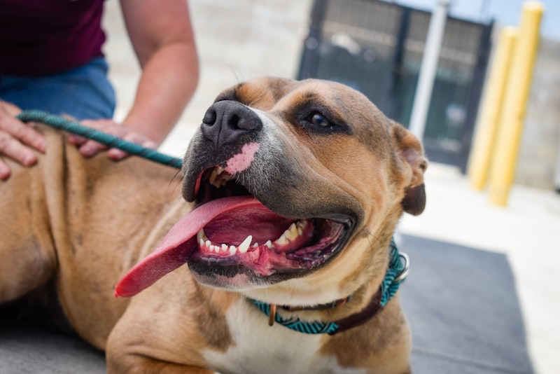

Amor Incondicional
.png)
Cada animal merece amor, respeto y una segunda oportunidad en la vida.
Nuestra Mision es darle un refugio animales que mas lo nesecitan
Rescatar animales abandonados, maltratados o en situacion de calle, brindandoles atencion veterinaria como tambien rehabilitacion fisica y emocional, para luego poder brindarles un hogar que los quiera y cuide.
Buscamos ser una comunidad donde ninguna animal sufra abandono o maltrato, promoviendo una adopcion responsable, respeto y protenccion animal.
Todo comenzó en 2011 cuando un grupo de amigos decidió que ya no podían seguir ignorando el sufrimiento de los animales abandonados en las calles de nuestra ciudad. Con recursos limitados pero con un corazón enorme, rescatamos a nuestro primer perro de una situación de maltrato. Ese momento cambió nuestras vidas para siempre. Hoy, 15 años después, hemos crecido hasta convertirnos en una organización con más de 200 voluntarios comprometidos, un refugio equipado con instalaciones veterinarias, y una red de hogares temporales que hacen posible nuestra misión día a día.

Los principios por los que nos guiamos dia a dia
Cada animal merece amor, respeto y una segunda oportunidad en la vida.
.png)
Trabajamos incansablemente por el bienestar de cada animal bajo nuestro cuidado.
Creemos en el poder de la comunidad para generar un cambio real y duradero.
Operamos con honestidad y claridad en todos nuestros procesos y decisiones.
Aqui se puede ver todos los integrantes del equipo:
Fundador de la ONG con varios años dedicados al rescate animal.